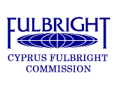
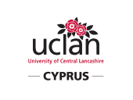

Are you a high school student in Cyprus? Join us for an amazing day with an introduction to coding, showing you how to build your own Frogger mobile game, win great trophies in a fun Treasure Hunt using your smart-phones, and be inspired by a must-watch documentary about young web entrepreneurs in Europe and North America. Get your free ticket now.
With the kind sponsorship of:
 